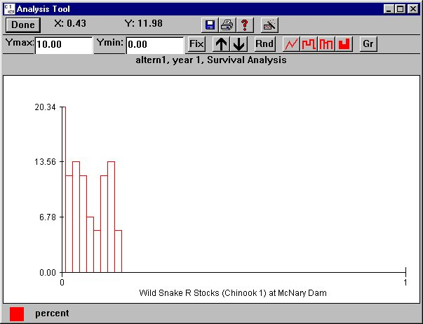

Analysis Tool
Selecting Analysis Monte Analysis opens the Analysis Tool graph window and its companion window the Monte Analysis Tool for visually examining the results of a Monte Carlo run. The Analysis Tool graph window has the same features as a Julian Day Output window; however, Julian days are not the unit of measurement for the X-axis. Survival or travel time between the point of release and points downstream can be viewed as either a histogram or cumulative distribution based on the selections made in the Monte Analysis Tool window.
Monte Analysis opens the Analysis Tool graph window and its companion window the Monte Analysis Tool for visually examining the results of a Monte Carlo run. The Analysis Tool graph window has the same features as a Julian Day Output window; however, Julian days are not the unit of measurement for the X-axis. Survival or travel time between the point of release and points downstream can be viewed as either a histogram or cumulative distribution based on the selections made in the Monte Analysis Tool window.
By selecting Survival or Travel Time for Data Type and clicking Plot in the Monte Analysis Tool, a frequency histogram or cumulative probability distribution of survival or travel time between release and river segment can be opened for passage points of any release.
Survival Graph
- Y-axis: Percent of games falling within the range of each bin.
- X-axis: Percent survival for the release through the segment for the selected alternative.
- Bin Size set in the Monte Analysis Tool determines the size of each bin. In the example graph, each bin is 2% and
20.34% of the games fall within the survival range of 0-1%
11.86% of the games fall within the survival range of 1-3%
13.56% of the games fall within the survival range of 3-5%
11.86% of the games fall within the survival range of 5-7%
6.78% of the games fall within the survival range of 7-9%
5.08% of the games fall within the survival range of 9-11%
11.86% of the games fall within the survival range of 11-13%
13.56% of the games fall within the survival range of 13-15%
5.08% of the games fall within the survival range of 15-17%.
Travel Time Graph
- Y-axis: Percent of games falling within the range of each bin (1 day).
- X-axis: Travel time in days for the release from the release site through the river segment for the selected alternative.

Monte Analysis Tool Survival histogram